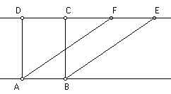

|  | Which do you think bigger, the area of rectangle ABCD and parallelogram ABEF? What is your reason? How do you explain your idea to your friends? One of my student did not believe that the area of a parallelogram is always the same if the base and the height are equal. How do you explain your idea to him. The applet below gives one explanation to our question. |
How to use the applet.To shift the figure, press "Left" and "Right" button.You can also move each rectangle to left and right by dragging it. The total area of the figure does not change since the area of the every narrow rectangle is always the same. |
| The photo below is a gage to record shapes. It consists of many slidable thin plates. | ||||
|